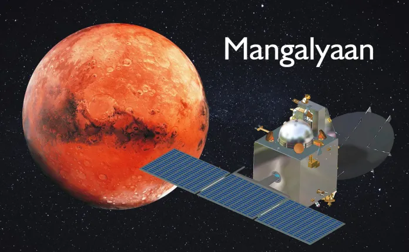
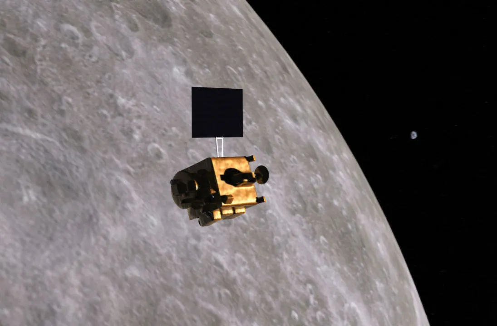

Chandrayaan 1 Discovery
Chandrayaan-1 was India’s first mission to the Moon. It made several groundbreaking discoveries, the most important being the detection of water/hydroxyl on the lunar surface. Here are some key points:
- Discovered evidence of water molecules on the Moon's surface.
- Used a NASA instrument to confirm the presence of hydroxyl in the lunar soil.
- Deployed the Moon Impact Probe (MIP) which confirmed the existence of water ice.
- Helped map lunar surface characteristics and provided data for future missions.
- Collaboration with NASA, ESA, and other space agencies advanced global space research.
Chandrayaan 2 Discovery
Chandrayaan-2 was tasked with exploring the Moon’s South Pole. Although its lander did not achieve a soft landing, the mission was still a significant success. Key points include:
- Mapped the Moon’s South Pole, identifying the presence of ice in shadowed regions.
- Studied the surface composition, revealing key elements like magnesium and aluminum.
- Detected traces of lunar soil and atmosphere, contributing to understanding lunar geology.
- Confirmed the presence of water ice in permanently shadowed areas of the Moon.
- The orbiter continues to provide valuable data for future lunar missions.


Chandrayaan 3 Achievement
Chandrayaan-3 contributed further to our understanding of the Moon. Key achievements include:
- Detected chemical signatures supporting the theory of a past magma ocean on the Moon.
- Provided insight into the Moon's geological history and the evolution of its surface.
- Confirmed the complexity of lunar surface composition with trace elements like sodium.
- Laid the groundwork for future research on the Moon’s internal structure.

Other ISRO Achievements
Beyond lunar exploration, ISRO has accomplished numerous significant space missions. Notable achievements include:
- First interplanetary mission, Mars Orbiter Mission (Mangalyaan), successfully entering Mars orbit on the first attempt.
- Provided key data about the Martian atmosphere, particularly around methane detection.
- Launched multiple satellites, contributing to climate monitoring, communication, and navigation systems globally.
- Planned future interplanetary missions, including potential Venus and asteroid exploration.

Future Lunar Missions
ISRO’s vision for future lunar exploration is ambitious. Here’s what’s planned:
- Chandrayaan-4 aims to further investigate the lunar surface and study deeper layers of the Moon.
- Focus on exploring more complex surface compositions and geological processes.
- Plans to collaborate with international space agencies for joint lunar research and exploration.
- Developing advanced technologies for more robust and safer lunar landings.